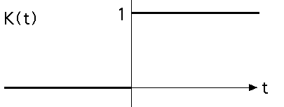
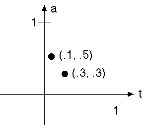
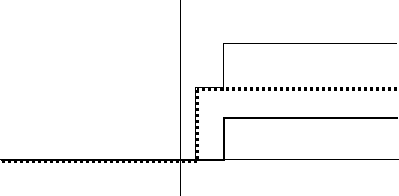
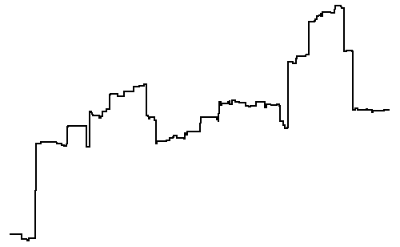

| Some care is needed to simulate Levy flights. Start with the unit step function K(t) |
|  |
| To build a random process with the desired properties, Levy added together many step functions, each multiplied by a factor to change the height of the step, and with the jumps happening at different times. |
| That is, |
|
|
| The amplititudes ai and times ti can be described as points in an address plane |
|  |
| Adding the step functions with these times and amplitudes gives this function. |
|  |
| To finish the construction, Levy specified the probability of including steps with times and amplitudes in a particular interval. |
| The
probability of finding amplitude a in the interval |
| This is called the Levy distribution. |
| Here is the sum of 100 such steps, with |
|  |
Return to Levy flights.